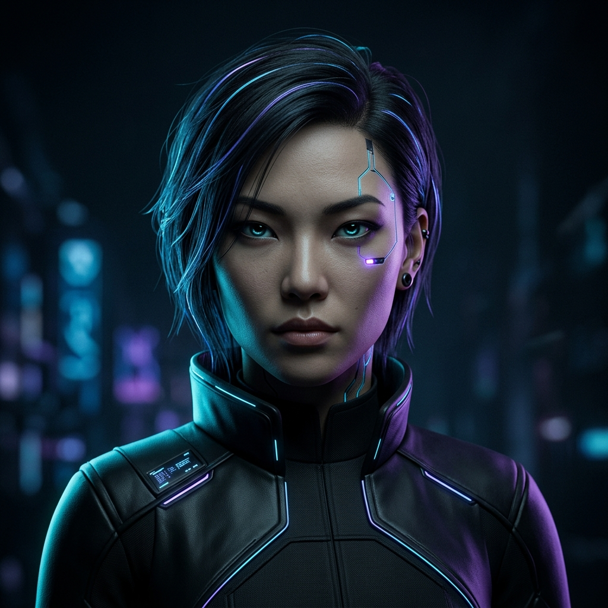

Control grayscale intensity natively in EaseMotion CSS. Apply 100% grayscale or reset elements back to full color.

This card uses .ease-filter-grayscale to lock the image to 100% monochrome. Perfect for inactive profiles or disabled states.
Click the button below to toggle between .ease-filter-grayscale and .ease-filter-grayscale-0.
This card uses .ease-filter-grayscale-0 to explicitly reset filters back to normal, ensuring full-color saturation.